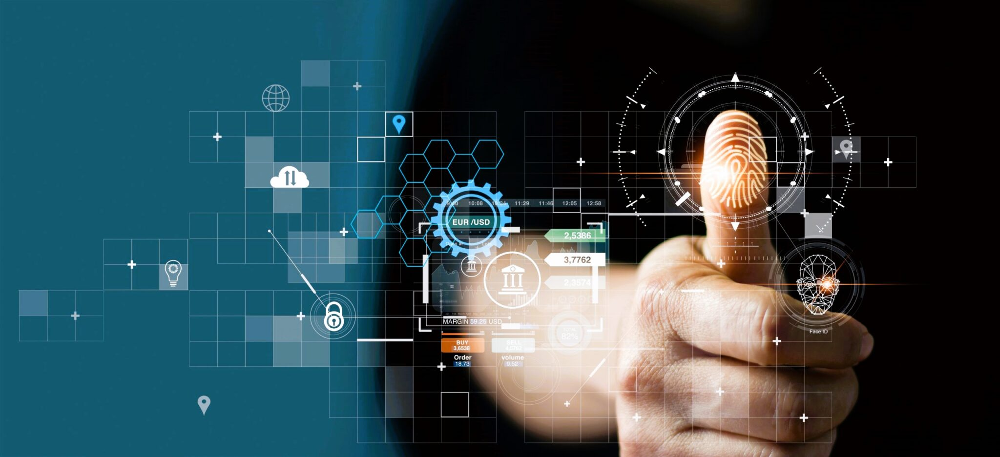
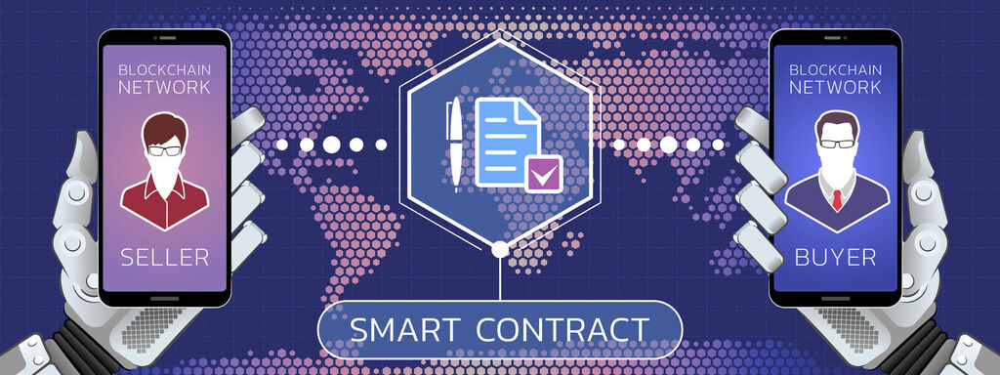
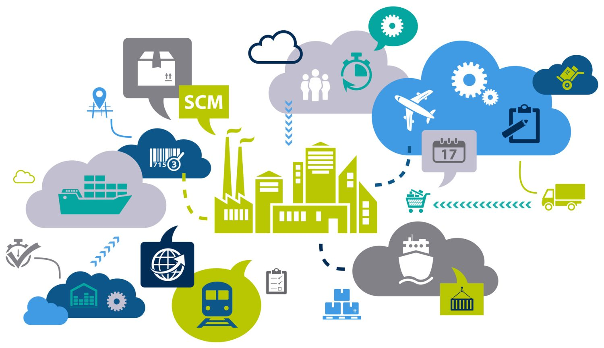
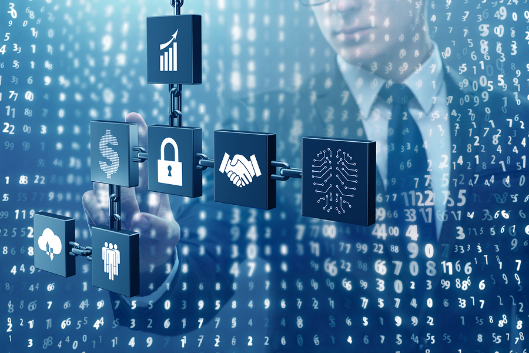

BCHAIN
7 Aplicaciones de la tecnología blockchain

1. Almacenamiento en la nube

Una de las aplicaciones del blockchain es su uso en el almacenamiento descentralizado en la nube. Tradicionalmente, los datos en la nube se almacenan en servidores centralizados, lo que puede hacer que sean vulnerables a fallas técnicas o ataques cibernéticos. Sin embargo, mediante el uso del blockchain, es posible crear una red de nodos distribuidos en diferentes ubicaciones geográficas, lo que garantiza que los datos estén disponibles incluso si un servidor se cae o es atacado. Esta descentralización de la información también permite una mayor integración de datos, ya que no se limita a una sola entidad o proveedor de servicios en la nube. Además, el blockchain puede proporcionar una mayor seguridad y privacidad en el almacenamiento de datos, ya que utiliza técnicas criptográficas para proteger la información almacenada.
2. Identidades digitales
A esto hay que sumarle la peligrosidad que suscita el robo de identidades digitales en los últimos tiempos; la cadena de bloques proporciona un sistema único seguro e inmutable que supone la solución óptima para el problema de la suplantación de las identidades. El robo de identidades digitales se ha convertido en un problema creciente en el mundo digital. La tecnología blockchain ofrece una solución para este desafío mediante la creación de identidades digitales seguras e inmutables. En lugar de depender de bases de datos centralizadas que pueden ser vulnerables a ataques, el blockchain puede utilizarse para verificar y autenticar identidades digitales de forma segura. Al utilizar criptografía y claves privadas, las identidades pueden ser verificadas sin revelar información personal sensible. Esto ayuda a prevenir el robo de identidades y el fraude, proporcionando una capa adicional de seguridad en el mundo digital.
3. Registro y verificación de datos

El blockchain también se utiliza para el registro y la verificación de datos de manera segura y transparente. En muchas industrias, los registros de datos son susceptibles a manipulaciones o pérdidas debido a la falta de una infraestructura confiable. Con el blockchain, es posible crear registros distribuidos que son inmutables y transparentes. Cada transacción o cambio en los datos se registra en forma de un bloque en la cadena, y una vez que se agrega un bloque, no se puede modificar ni eliminar. Esto proporciona una mayor confianza en la integridad de los datos, ya que cualquier intento de manipulación o alteración dejaría una huella digital en la cadena de bloques, lo que facilita la detección de fraudes. Esta aplicación del blockchain es especialmente útil en áreas como la gestión de registros médicos, la trazabilidad de productos, la gestión de derechos de autor y la certificación de documentos legales.
4. Contratos inteligentes
Los contratos inteligentes son programas informáticos que se ejecutan automáticamente cuando se cumplen ciertas condiciones predefinidas. El blockchain permite la creación y ejecución de contratos inteligentes de manera eficiente y segura. Estos contratos se basan en algoritmos y lógica programable, y su cumplimiento no depende de la interpretación humana, lo que reduce la posibilidad de conflictos y malentendidos. Los contratos inteligentes pueden utilizarse en una amplia gama de aplicaciones, como transacciones financieras, acuerdos legales, gestión de derechos de propiedad intelectual y mucho más. Al eliminar intermediarios y automatizar los procesos, los contratos inteligentes pueden agilizar las operaciones comerciales y reducir costos.
5. Cadenas de suministro
La tecnología blockchain también se está utilizando para mejorar la gestión de las cadenas de suministro. En las cadenas de suministro tradicionales, puede ser difícil rastrear el origen y el recorrido de los productos, lo que puede llevar a problemas como la falta de transparencia, la falsificación y la ineficiencia. El blockchain permite registrar y rastrear cada etapa de la cadena de suministro de manera segura y transparente. Esto proporciona una mayor visibilidad y trazabilidad de los productos, lo que facilita la detección de productos falsificados, el cumplimiento de regulaciones y normativas, la gestión de la calidad y la optimización de los procesos logísticos. Al compartir información en tiempo real a lo largo de la cadena de suministro, los participantes pueden colaborar de manera más eficiente y tomar decisiones basadas en datos confiables.
6. Seguridad automatizada
La tecnología blockchain ofrece una mayor seguridad automatizada para diversas aplicaciones. La naturaleza descentralizada del blockchain, junto con la criptografía utilizada para proteger los datos, lo hace resistente a los ataques cibernéticos y a las vulnerabilidades de seguridad comunes. La integridad de los datos almacenados en el blockchain se garantiza mediante algoritmos criptográficos que hacen que sea extremadamente difícil alterar o manipular los registros. Esto hace que el blockchain sea adecuado para aplicaciones donde la seguridad de los datos es de suma importancia, como la gestión de contraseñas, la protección de la propiedad intelectual, la autenticación de datos y la seguridad cibernética en general. Además, el blockchain puede proporcionar sistemas de vigilancia y monitoreo que funcionan las 24 horas del día, los 7 días de la semana, sin la posibilidad de interrupciones del servidor.
7. Sistema de votación

En un mundo cada vez más digitalizado, el blockchain se ha propuesto como una solución para mejorar los sistemas de votación. La tecnología blockchain puede proporcionar un sistema transparente y seguro para el registro y el recuento de votos. Al registrar cada voto de manera inmutable en la cadena de bloques, se garantiza la integridad del proceso de votación y se evita el fraude. Además, la transparencia de la cadena de bloques permite a los votantes verificar y auditar los resultados de las elecciones, lo que aumenta la confianza en el sistema electoral. Si bien aún existen desafíos y consideraciones técnicas en el desarrollo de sistemas de votación basados en blockchain, algunos lugares, como el estado de Virginia Occidental en Estados Unidos, ya han comenzado a implementar esta tecnología en elecciones locales.